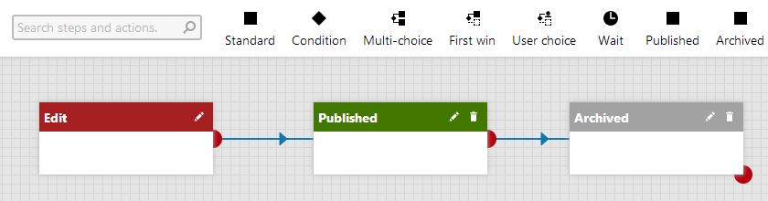
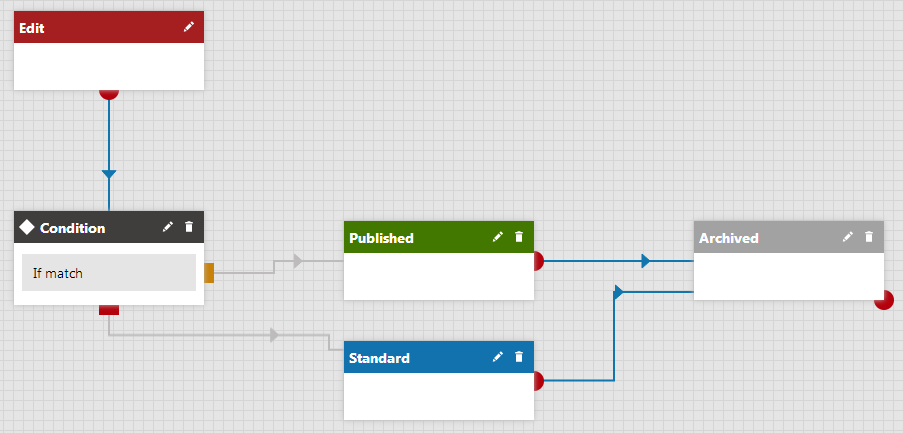

Designing advanced workflows
In this chapter, you will learn how to design an advanced workflow process. Before you begin with creating steps, familiarize yourself with the Workflow designer tool.
Prerequisite
Windows Communication Foundation must be configured for the advanced workflow designer to work.
Workflow designer
The workflow designer is a tool for creating complex workflow processes.
You can find the workflow designer on the Steps tab when editing an advanced workflow (in the Workflows application). The designer consists of a toolbar and a grid. By placing workflow steps from the toolbar on the grid and connecting them, you form a graph that represents the workflow process.
The following image shows a basic workflow process consisting of the Edit, Published and Archived steps, as it appears in the workflow designer. The steps are connected with transition lines. The direction in which the arrows point is the direction in which a page will be shifted through the steps.

Workflow designer
If your graph doesn't fit into the designer area, you can click and drag an unoccupied area of the grid to shift it and expose additional free space.
Kentico EMS required
Features described on this page require the Kentico EMS license.
Step types
In advanced workflow, you can use the following types of steps:
Standard step allows approving or rejecting a page.
Condition allows splitting the workflow process into two branches, according to whether the condition is met or not.
Multi-choice step allows splitting the workflow process into multiple branches. You can define a number of conditions, one of which will determine the branch the process will automatically continue in. If more than one condition is met, users will be able to choose.
First-win step allows defining a number of conditions, where the first condition that is met determines the branch the process will automatically continue in.
User choice allows defining branches of the process, where the user will choose the branch the process will continue in.
Wait allows to define a time period after which a page will be automatically shifted to the next step.
Published step puts a page's latest version up to the live site.
Archived step makes a page inaccessible from the live site.
You can also embed actions that will be automatically performed when a page reaches an action step:
Copy page- copies a specified page to another location.
Delete page - deletes a specified page.
Import translation - imports translations of the page that are ready.
Link page - creates a linked page.
Move page - moves a specified page to another location.
Publish to Facebook - automatically sends a predefined post on Facebook.
Publish to Twitter - automatically sends a predefined post on Twitter.
Send for translation - submits a page for translation using the specified translation service.
Send e-mails - sends e-mails based on a specified e-mail template.
Send notification e-mails - sends e-mails according to the e-mail settings defined for the step that immediately follows.
Set page property - assigns a specified value to a page's property.
Synchronize page - synchronizes a specified page to all enabled staging servers.
You can also create your own actions.
Source points
The red points are source points. You can drag a source point with your mouse and drop it on another step to create a connection between the two steps.
Some steps can have more than a single source point.

Source points on steps in the workflow designer
Condition step, for example, allow you to create branches of the process. Therefore, they have two source points. The point after the 'If match' condition' indicates where the process continues if that condition is met. The red point indicates where the process should continue if no condition is met. Steps that offer multiple conditions have multiple blue source points, one for each condition.
To learn how to connect steps together, refer to the Connecting advanced workflow steps topic.